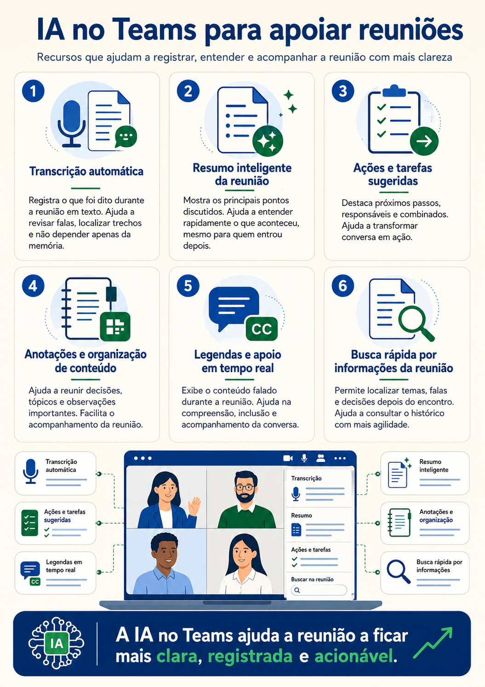
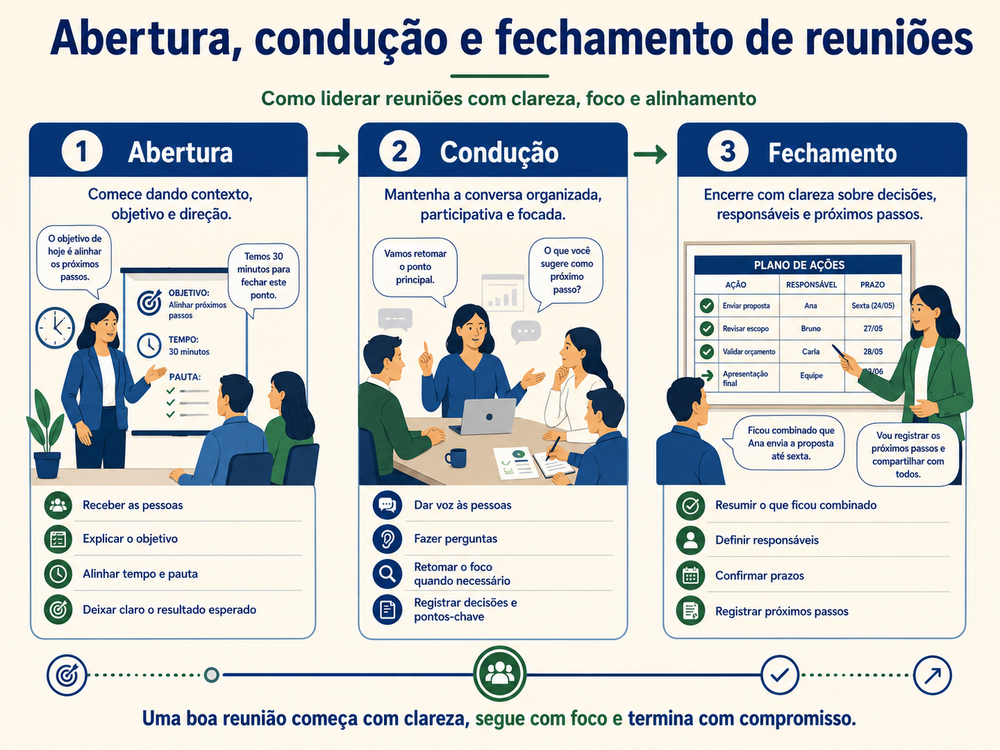
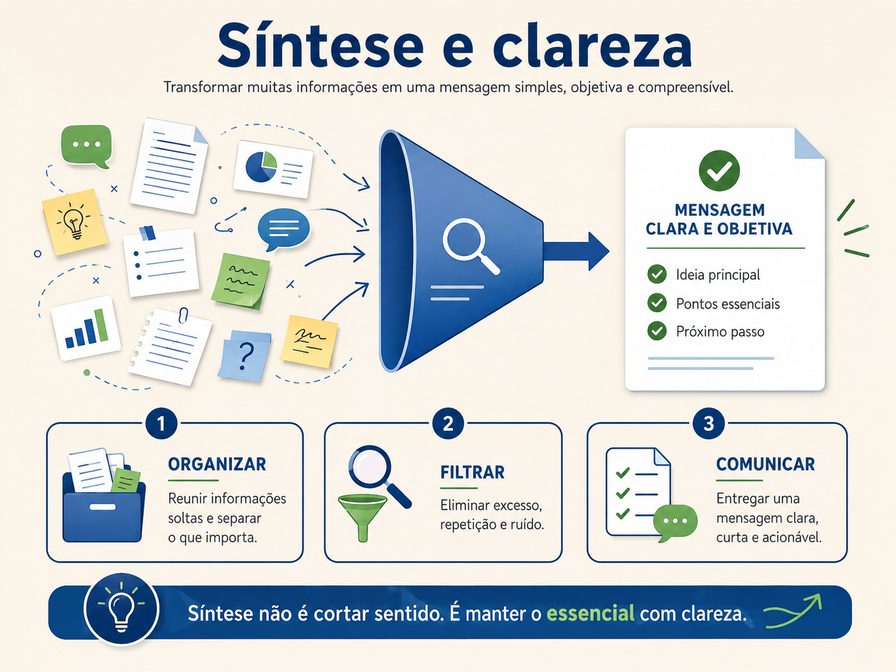

Comunicação assertiva e estrutura da mensagem
Uma conversa sobre clareza, respeito, firmeza, linguagem verbal e não verbal, com prática de mensagens mais conscientes.
Bom dia, pessoal. Pensa em uma frase comum no trabalho: vê isso aí quando puder. Ela parece educada, mas pode gerar problema. O que é “isso”? Quando é “quando puder”? Qual é a prioridade? O que precisa ser entregue? Como a pessoa confirma que terminou? A frase não é agressiva, mas também não é clara.
Agora pense em outro extremo: resolve isso agora, porque não dá mais para esperar sua demora. Aqui existe pressão, julgamento e ataque. Talvez a pessoa até faça, mas a relação fica desgastada. Entre esses dois extremos existe um caminho melhor, que é a comunicação assertiva.
Ser assertivo é dizer o que precisa ser dito com clareza, respeito e firmeza. Clareza é explicar sem deixar a pessoa adivinhar. Respeito é tratar a pessoa com dignidade, mesmo quando existe correção. Firmeza é sustentar o ponto necessário, sem fugir da conversa.
Não. Falar duro pode ser agressividade. Assertividade não é volume de voz, não é grosseria e não é carteirada. Assertividade é equilíbrio. A pessoa não se omite, mas também não atropela. Ela fala de forma que o outro entenda o fato, o impacto e o pedido.

A comunicação passiva acontece quando a pessoa evita se posicionar. Ela não diz que discordou, não explica o limite, não fala do problema e depois acumula incômodo. Parece que está tudo bem, mas por dentro a conversa continua. O risco da passividade é deixar o problema crescer em silêncio.
A comunicação agressiva acontece quando a pessoa impõe, ataca, desrespeita ou usa pressão desnecessária. Pode até gerar obediência no curto prazo, mas costuma reduzir confiança. O time pode parar de trazer risco, esconder erro ou fazer apenas o mínimo para evitar atrito.
A comunicação assertiva fica no meio maduro. Ela olha para a situação, preserva a pessoa e direciona a ação. Por exemplo, em vez de dizer “vê isso aí quando puder”, a pessoa diz: preciso que você revise o relatório até amanhã às 12h, porque ele será usado na reunião com o cliente. Se encontrar divergência nos dados, me avise antes de ajustar.
Perceba que a segunda frase não é fria. Ela é útil. Ela explica o que precisa ser feito, prazo, motivo e orientação. Isso é respeito também. Respeito não é apenas falar macio. Respeito é não deixar o outro perdido.
Clareza sem respeito vira dureza.
Respeito sem clareza vira confusão.
Firmeza sem escuta vira imposição.
Uma estrutura simples para mensagem assertiva é contexto, impacto e direcionamento. Contexto é o que está acontecendo. Impacto é por que aquilo importa. Direcionamento é o que precisa ser feito. Por exemplo: estamos com atraso na validação do material, isso impacta o envio ao cliente, então precisamos fechar a revisão até 15h e registrar qualquer pendência no canal do projeto.
Essa estrutura funciona porque evita que a conversa vire opinião solta. Em vez de dizer “você está enrolando”, a liderança traz o fato. Em vez de dizer “isso está horrível”, traz o impacto. Em vez de terminar com bronca, traz direcionamento.

Linguagem verbal é o conjunto de palavras que usamos. Linguagem não verbal é tudo aquilo que comunica sem depender das palavras: tom de voz, expressão facial, postura, ritmo, olhar, silêncio, gesto, distância, câmera aberta ou fechada em uma reunião. Às vezes a frase é educada, mas o tom comunica irritação.
Imagine alguém dizendo “tudo bem” com voz dura, expressão fechada e resposta seca. A palavra diz uma coisa, o corpo diz outra. Quando verbal e não verbal se contradizem, o receptor tende a acreditar mais no clima da mensagem do que na palavra isolada.

Também precisamos cuidar dos estilos de linguagem. Uma linguagem muito genérica deixa a pessoa perdida. Uma linguagem muito técnica pode excluir quem não domina o assunto. Uma linguagem irônica pode machucar. Uma linguagem defensiva pode virar disputa. Uma linguagem objetiva e humana ajuda a resolver.
Palavras absolutas merecem cuidado: sempre, nunca, todo mundo, ninguém, toda vez. Elas transformam um episódio em acusação. Em vez de dizer “você nunca atualiza o status”, é melhor dizer “nas duas últimas reuniões, o status não estava atualizado no início do encontro”. A segunda frase é mais justa e mais fácil de discutir.
Depois da pausa, vamos praticar essa estrutura com situações concretas. Se uma pessoa entrega um relatório incompleto, uma fala agressiva seria: você não presta atenção em nada. Uma fala passiva seria: tudo bem, eu arrumo. Uma fala assertiva seria: o relatório veio sem a aba de riscos, e essa informação é necessária para a reunião de status. Para o próximo envio, preciso que você valide as abas obrigatórias antes de compartilhar.
Se o cliente cobra uma informação com irritação, uma resposta reativa seria: estamos fazendo o possível, não adianta pressionar. Uma resposta assertiva seria: entendo a urgência. Neste momento, estamos validando a base para evitar envio de número incorreto. Consigo te dar uma posição parcial às 15h e a versão validada até 17h.
Se uma pessoa interrompe sempre na reunião, a fala assertiva pode ser: na reunião de hoje, você interrompeu duas vezes antes da pessoa concluir o raciocínio. Isso dificulta a escuta e pode inibir o time. Na próxima conversa, preciso que você deixe a pessoa concluir e depois traga seu ponto.
Comunicação exige prática. Não basta saber o conceito. É como aprender a dirigir. No começo, a pessoa pensa em tudo ao mesmo tempo: embreagem, freio, seta, retrovisor, marcha. Com treino, o corpo organiza melhor. Na comunicação, a mesma coisa. No início, estruturar a fala pode parecer artificial. Depois fica mais natural.
O Corpo Fala, pode ampliar repertório sobre linguagem corporal. A leitura precisa ser usada com cuidado, porque gesto isolado não prova intenção, mas ajuda a observar melhor a comunicação não verbal.
A assertividade também depende de intenção. Às vezes a pessoa usa uma frase tecnicamente correta, mas com intenção de diminuir o outro. Isso não é assertividade. Outras vezes, a pessoa tem boa intenção, mas fala de um jeito tão vago que não ajuda. A comunicação assertiva precisa unir intenção limpa e forma clara.
Uma boa pergunta antes de se posicionar é: estou tentando resolver ou apenas descarregar? Se a resposta honesta for descarregar, vale pausar. Resolver exige escolher palavras que ajudem o outro a entender o problema e agir. Descarregar só joga tensão no ambiente.
O contexto precisa vir na medida certa. Contexto demais pode cansar. Contexto de menos pode confundir. Se a pessoa precisa revisar uma planilha, talvez não precise ouvir toda a história do projeto. Mas precisa saber por que aquela revisão importa, qual parte revisar, qual prazo e qual critério de qualidade.
O impacto também precisa ser explicado. Muitas pessoas resistem a pedidos porque não entendem consequência. Quando a liderança explica impacto, a tarefa deixa de parecer capricho. Por exemplo: preciso desse status até 15h porque a diretoria usará essas informações para decidir prioridade de recursos. Agora a pessoa entende que não é só cobrança de horário.
O direcionamento fecha a mensagem. Sem direcionamento, a pessoa pode entender o problema, mas não saber o que fazer. O direcionamento pode ser um pedido, uma decisão, uma orientação ou uma confirmação. Algo como: atualize o campo de risco, me avise quando concluir e sinalize se algum dado estiver pendente.
A linguagem não verbal também precisa combinar com a mensagem. Em uma conversa de feedback, olhar para o relógio o tempo todo comunica pressa. Em uma reunião online, desligar a câmera sem contexto pode ser interpretado como distância, dependendo da cultura do time. Em uma conversa difícil, cruzar os braços, suspirar e olhar para o lado pode passar impaciência, mesmo que as palavras sejam educadas.
Isso não significa interpretar qualquer gesto como prova. Uma pessoa pode cruzar os braços porque está com frio. Pode olhar para baixo porque está anotando. Pode ficar séria porque está concentrada. Linguagem corporal deve ser observada com contexto, não como julgamento isolado.
O cuidado com ironia é outro ponto. A ironia pode parecer engraçada para quem fala, mas pode machucar quem recebe. Em liderança, uma piada sobre erro pode reduzir a confiança do time para trazer problemas. A pessoa pensa: se eu falar, vão rir de mim. Por isso, humor precisa ter responsabilidade.
Assertividade também aparece no limite. Dizer não faz parte. Um não assertivo não precisa ser grosseiro. Pode ser: entendo a urgência, mas não consigo assumir essa entrega hoje sem comprometer a validação do cliente. Posso apoiar amanhã ou ajudar a priorizar o que sai primeiro. Aqui existe respeito e firmeza.
Para praticar, uma boa técnica é revisar mensagens importantes antes de enviar. Procure quatro pontos: existe fato claro? Existe impacto? Existe pedido? O tom está respeitoso? Essa revisão rápida evita muitos ruídos de chat e e-mail.
Em conversas ao vivo, a prática pode ser usar frases de transição. Em vez de reagir direto, diga: deixa eu organizar o que entendi. Ou: vou separar em dois pontos. Ou ainda: quero tratar isso com cuidado. Essas frases dão alguns segundos para pensar e mostram intenção de clareza.
Reflexão 17
Reescreva a frase “vê isso aí quando puder” de forma assertiva, incluindo o que precisa ser feito, prazo e motivo.
Ver uma possibilidade de resposta
Uma possibilidade: preciso que você revise a planilha de custos até amanhã às 10h, porque ela será usada na reunião de planejamento. Se encontrar divergência, sinalize no próprio arquivo e me avise no chat.
Reflexão 18
Transforme uma frase agressiva em uma frase focada no fato. Frase: você sempre atrasa tudo.
Ver uma possibilidade de resposta
Uma possibilidade: nas duas últimas entregas, o material chegou depois do prazo combinado. Isso impactou a revisão do time. Precisamos entender o bloqueio e combinar um horário limite para os próximos envios.
Reflexão 19
Escreva uma mensagem assertiva para cobrar retorno sem parecer ataque.
Ver uma possibilidade de resposta
Uma possibilidade: preciso de uma atualização sobre o item combinado ontem, porque essa informação define o próximo passo do projeto. Você consegue me retornar até 14h com o status ou com o bloqueio?
Reflexão 20
Pense em uma situação em que seu tom pode ter comunicado algo diferente das palavras. O que você ajustaria?
Ver uma possibilidade de resposta
Uma possibilidade: eu disse “tudo bem” para encerrar rápido, mas estava visivelmente irritado. O ajuste seria dizer: eu preciso de alguns minutos para organizar melhor minha resposta, porque quero tratar isso com clareza e sem reagir no impulso.
A comunicação assertiva não é uma técnica para vencer conversa. É uma forma de diminuir ambiguidade, proteger a relação e sustentar o que precisa ser sustentado. Quando a mensagem tem contexto, impacto, pedido e respeito, a liderança fica mais clara e o outro tem mais condição de agir.